完整Route → 环绕建图 → 第二通道04/5R
人工标注时的原始仓库。Codex代答＋waypoint曲线＋控制器；不是已训练VLA的能力验证。
上方为原速采样录像；4倍速概览 · 说明与限制 · 报告 · 完整本地地图（本机链接） · 全部地标
Route递归及切换速度 · 人工审核表 · 三维语义图
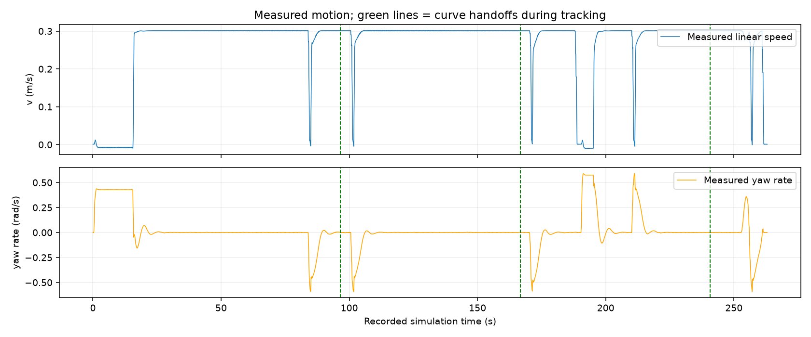
第二通道接近时的04/5R
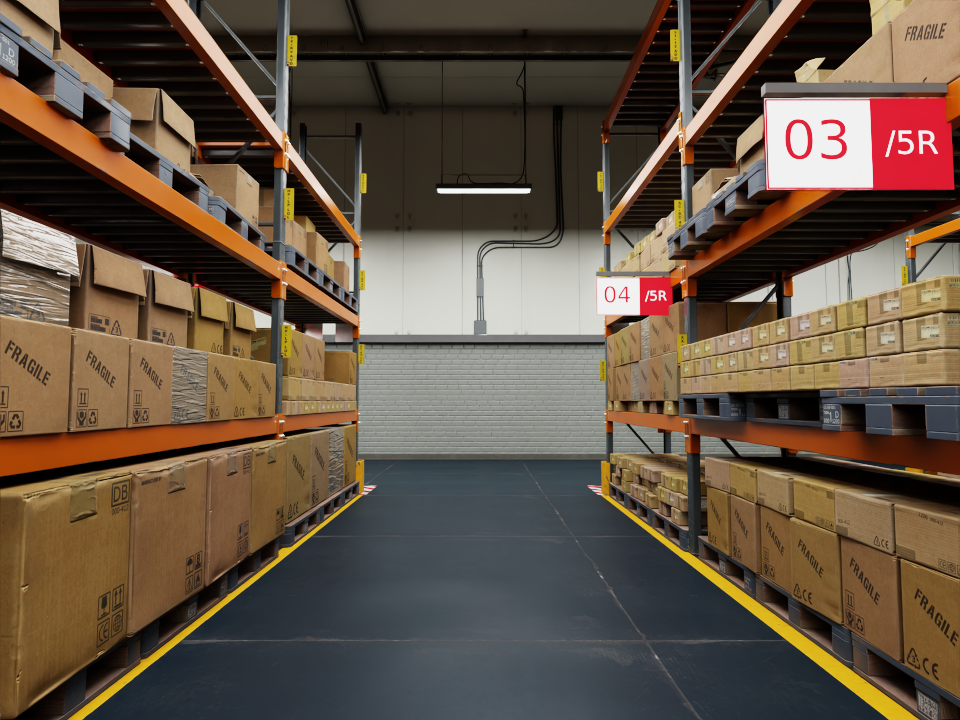
任务2开始与结束
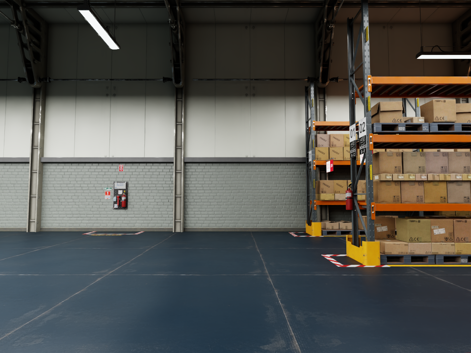
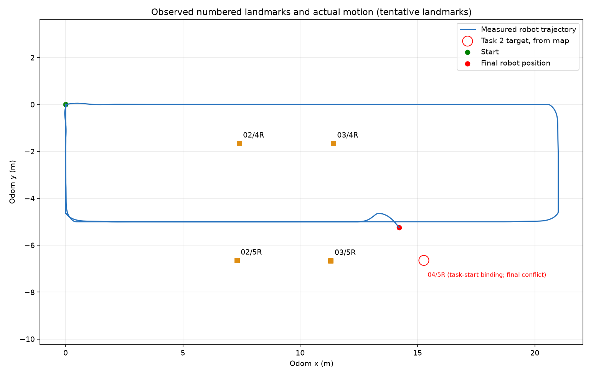
{
"geometry_frames": 1315,
"semantic_frames": 255,
"distance_m": 70.46984641019212,
"loop_complete": true,
"target_reached": true,
"provider": "codex-reviewed-decision-replay",
"trained_VLA": false,
"api_calls": 0,
"runtime_report_provider": "codex-session",
"providers": [
"codex-reviewed-decision-replay"
],
"actual_perception_results": 255,
"source_capture_frames": 1317,
"accepted_responses": 7,
"rejected_responses": 0,
"full_raw_output": "/data/ticvla/outputs/navigation/codex-continuous-20261112-v2",
"note": "Codex-session supplied navigation decisions; fixed Codex category policy, real YOLO-E/OCR. Not trained VLA inference or navigation benchmark.",
"post_task_unconsumed_capture_frames": 2,
"perception_timing_seconds": {
"segmentation_s": {
"n": 255,
"p50": 0.016630172729492188,
"p95": 0.04812946319580077
},
"ocr_s": {
"n": 255,
"p50": 0.4247164726257324,
"p95": 0.8631517887115474
},
"source_lag_s": {
"n": 255,
"p50": 0.40000002086162567,
"p95": 1.0000000521540642
}
},
"static_anchor_count": 0,
"human_review": "pending; assistant visual inspection only",
"map_directory": "/data/ticvla/outputs/navigation/codex-continuous-20261112-v2/navigation/map",
"target_identity_at_finish": "conflict",
"target_binding_policy": "Task-start UID retained; later OCR conflicts remain visible, not overwritten by requested text"
}continuous-loop-0 — accepted=True
输入与来源 · 原文
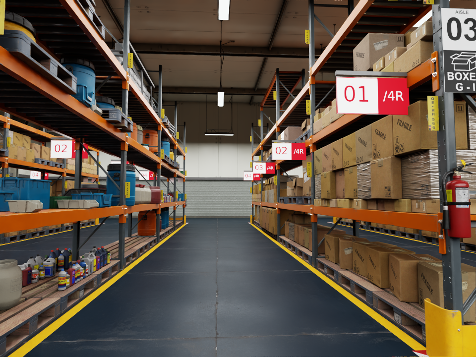
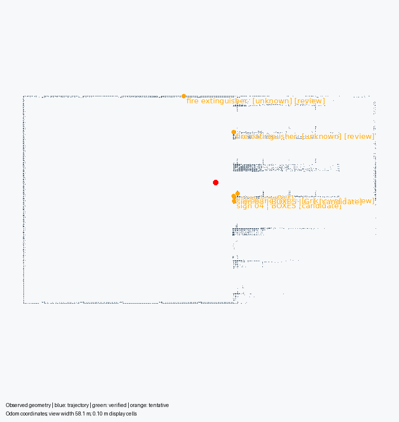
{
"request_id": "continuous-loop-0",
"task_id": "mapping",
"instruction": "Follow the starting aisle to its far end, turn right across the cross-aisle, turn right into the second parallel aisle, follow it to the near end, turn right back to the starting point, and STOP after completing the circuit and building the semantic map.",
"initial_route": "Follow this aisle to the far end, turn right across the cross-aisle, turn right into the second aisle, follow it to the near end, turn right back to the starting point and STOP.",
"previous_route_policy": "Retain every unfinished step in order, including final STOP.",
"landmark": [],
"local": "At the entrance of the starting warehouse aisle, facing along it.",
"route": "Follow this aisle to the far end, turn right across the cross-aisle, turn right into the second aisle, follow it to the near end, turn right back to the starting point and STOP.",
"waypoint": [
[
9.964724339500252,
0.6367683361526266
],
[
20.243584336592612,
1.296341098232988
],
[
20.942147637365878,
1.341166431578255
],
[
20.986972963552393,
0.6426031313822517
],
[
21.262328538698124,
-3.6485714269646268
]
],
"planning_started_monotonic": 7810.911317321,
"source_image_id": "codex-continuous-20261112-v2:00000076",
"provider": "codex-reviewed-decision-replay",
"accepted": true,
"wall": 1794472205.6459656
}continuous-loop-1 — accepted=True
输入与来源 · 原文
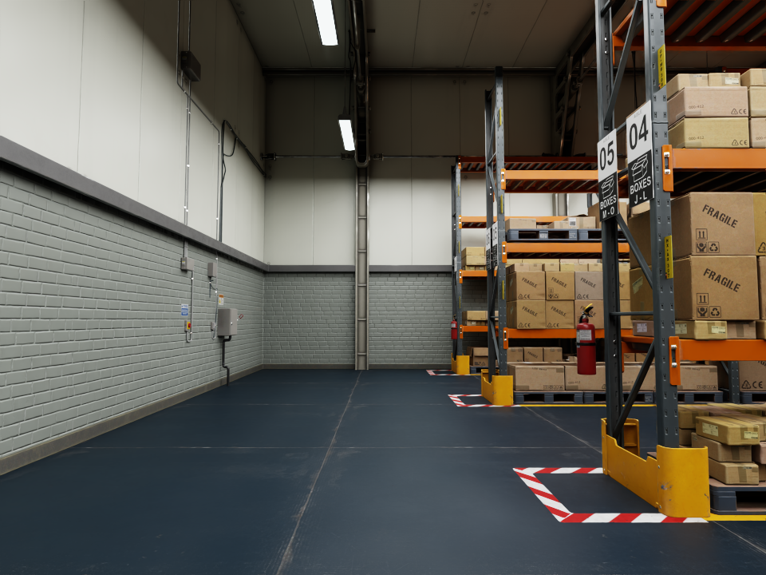
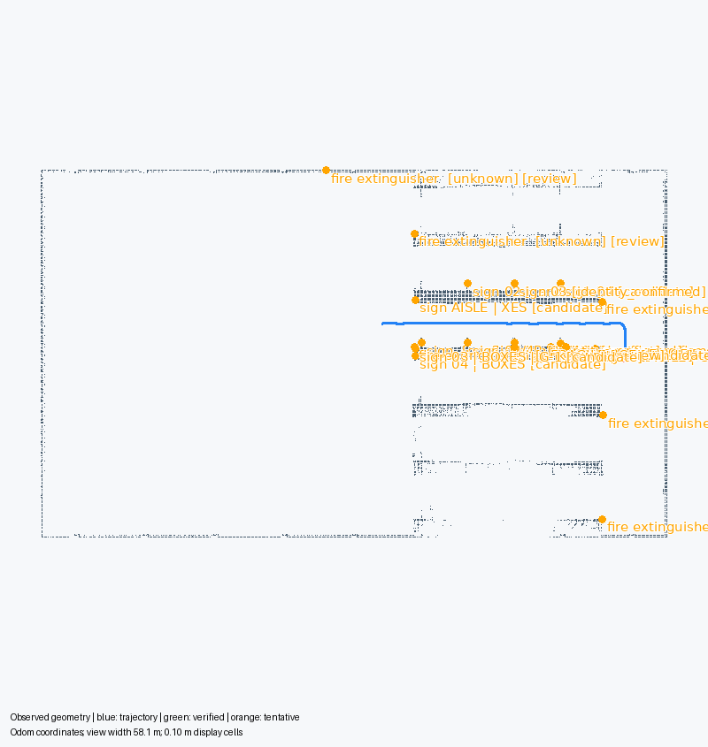
{
"request_id": "continuous-loop-1",
"task_id": "mapping",
"instruction": "Follow the starting aisle to its far end, turn right across the cross-aisle, turn right into the second parallel aisle, follow it to the near end, turn right back to the starting point, and STOP after completing the circuit and building the semantic map.",
"initial_route": "Follow this aisle to the far end, turn right across the cross-aisle, turn right into the second aisle, follow it to the near end, turn right back to the starting point and STOP.",
"previous_route_policy": "Retain every unfinished step in order, including final STOP.",
"landmark": [
"fire extinguisher"
],
"local": "In the far cross-aisle, approaching the entrance of the parallel aisle.",
"route": "Continue across the far cross-aisle, turn right into the second aisle, follow it to the near end, turn right back to the starting point and STOP.",
"waypoint": [
[
2.0919888250807044,
0.004436461799205205
],
[
2.0929460538641416,
-0.6955620075008575
],
[
2.1070309916775636,
-10.995539484344622
],
[
2.119748459800363,
-20.295519147902585
],
[
2.1207056885837994,
-20.995517617202648
]
],
"planning_started_monotonic": 7891.86440385,
"source_image_id": "codex-continuous-20261112-v2:00000477",
"provider": "codex-reviewed-decision-replay",
"accepted": true,
"wall": 1794472286.5897403
}continuous-loop-2 — accepted=True
输入与来源 · 原文
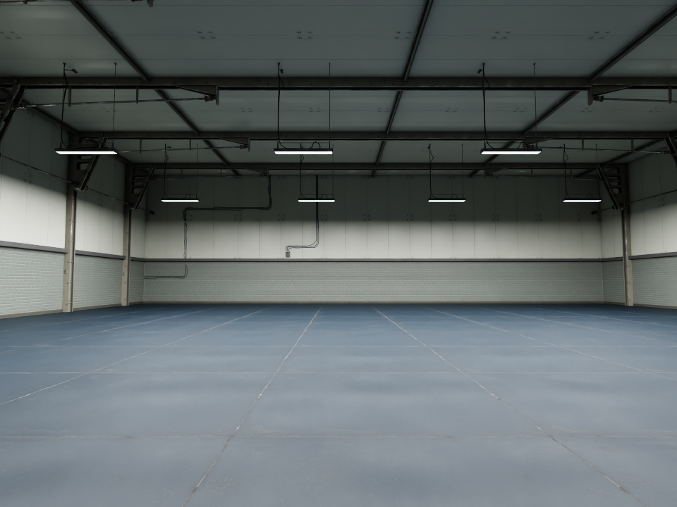
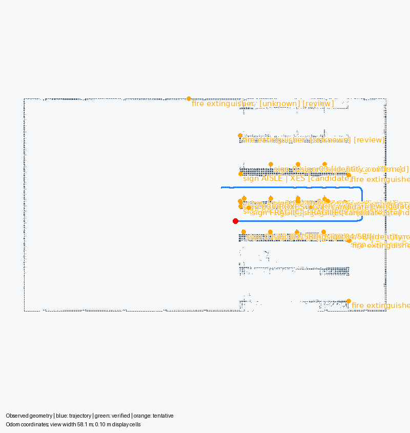
{
"request_id": "continuous-loop-2",
"task_id": "mapping",
"instruction": "Follow the starting aisle to its far end, turn right across the cross-aisle, turn right into the second parallel aisle, follow it to the near end, turn right back to the starting point, and STOP after completing the circuit and building the semantic map.",
"initial_route": "Follow this aisle to the far end, turn right across the cross-aisle, turn right into the second aisle, follow it to the near end, turn right back to the starting point and STOP.",
"previous_route_policy": "Retain every unfinished step in order, including final STOP.",
"landmark": [],
"local": "Near the end of the second aisle, approaching the starting cross-aisle.",
"route": "Continue to the near end of this aisle, turn right across the cross-aisle, return to the starting point and STOP.",
"waypoint": [
[
2.0935068942761643,
0.001777964774813512
],
[
2.0939273120960094,
-0.6982219089743422
],
[
2.0950083864898956,
-2.498221584329314
],
[
2.0960894608837823,
-4.2982212596842855
],
[
2.096509878703627,
-4.998221133433441
]
],
"planning_started_monotonic": 7961.800366516,
"source_image_id": "codex-continuous-20261112-v2:00000826",
"provider": "codex-reviewed-decision-replay",
"accepted": true,
"wall": 1794472356.677997
}continuous-loop-complete — accepted=True
输入与来源 · 原文
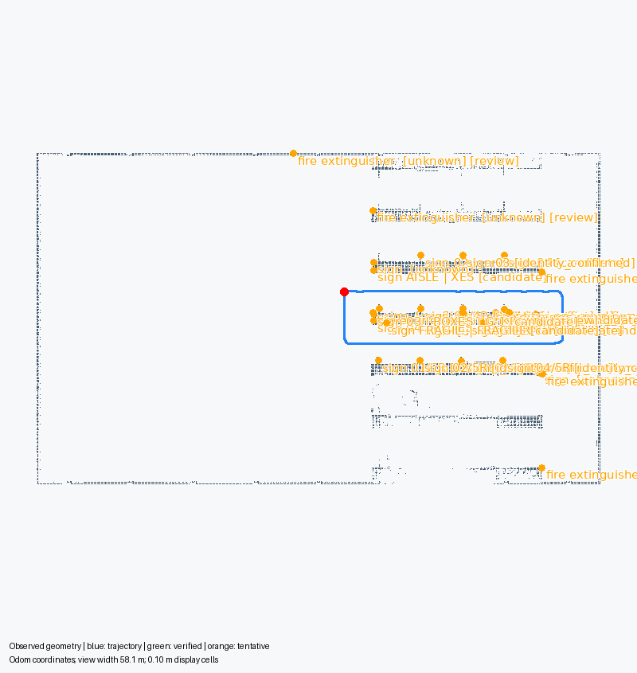
{
"request_id": "continuous-loop-complete",
"task_id": "mapping",
"action": "complete_mapping",
"instruction": "Follow the starting aisle to its far end, turn right across the cross-aisle, turn right into the second parallel aisle, follow it to the near end, turn right back to the starting point, and STOP after completing the circuit and building the semantic map.",
"local": "Back at the starting cross-aisle.",
"route": "STOP",
"source_image_id": "codex-continuous-20261112-v2:00000949",
"provider": "codex-reviewed-decision-replay",
"accepted": true,
"wall": 1794472380.2227018
}continuous-target-0 — accepted=True
输入与来源 · 原文


{
"request_id": "continuous-target-0",
"task_id": "target",
"instruction": "Navigate to sign 04/5R in the farther second aisle and STOP beside it.",
"initial_route": "Turn around, cross the near-end cross-aisle, turn left into the second aisle, follow it to sign 04/5R, approach the sign and STOP beside it.",
"previous_route_policy": "Retain every unfinished step in order, including final STOP.",
"landmark": [
"fire extinguisher"
],
"local": "At the starting cross-aisle. Mapped sign 04/5R is in the farther parallel aisle.",
"route": "Turn around, cross the near-end cross-aisle, turn left into the second aisle, follow it to sign 04/5R, approach the sign and STOP beside it.",
"waypoint": [
[
-0.6239498116002352,
0.004862751580178647
],
[
-4.223364949903488,
0.013746350225395734
],
[
-4.923361943733547,
0.01547398988548121
],
[
-4.925087831095749,
-0.6845230043858187
],
[
-4.948694350366413,
-10.259013725255052
]
],
"planning_started_monotonic": 7985.609708549,
"target_uid": "dcd8ceacda4e43be8ae1e14c37d312c0",
"source_image_id": "codex-continuous-20261112-v2:00000946",
"provider": "codex-reviewed-decision-replay",
"accepted": true,
"wall": 1794472380.427429
}continuous-target-1 — accepted=True
输入与来源 · 原文
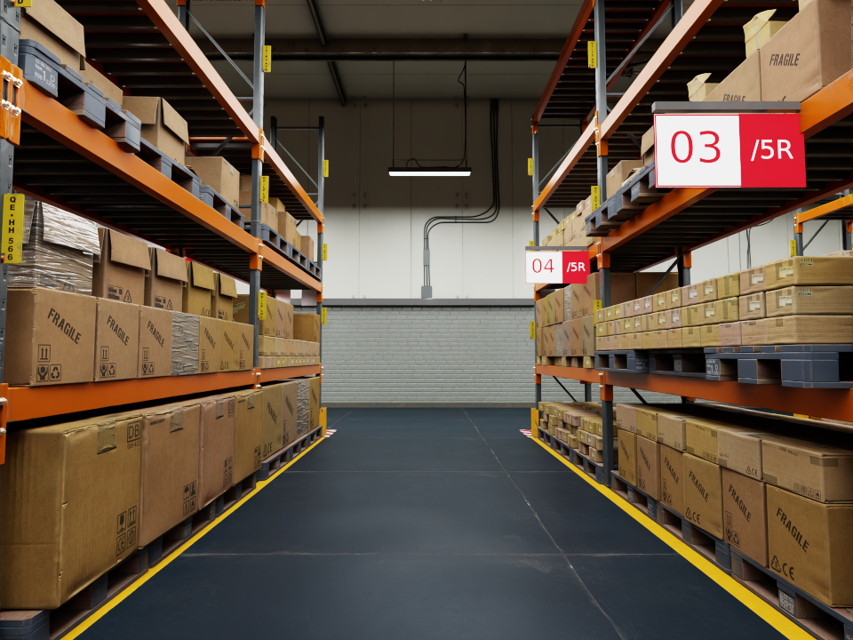
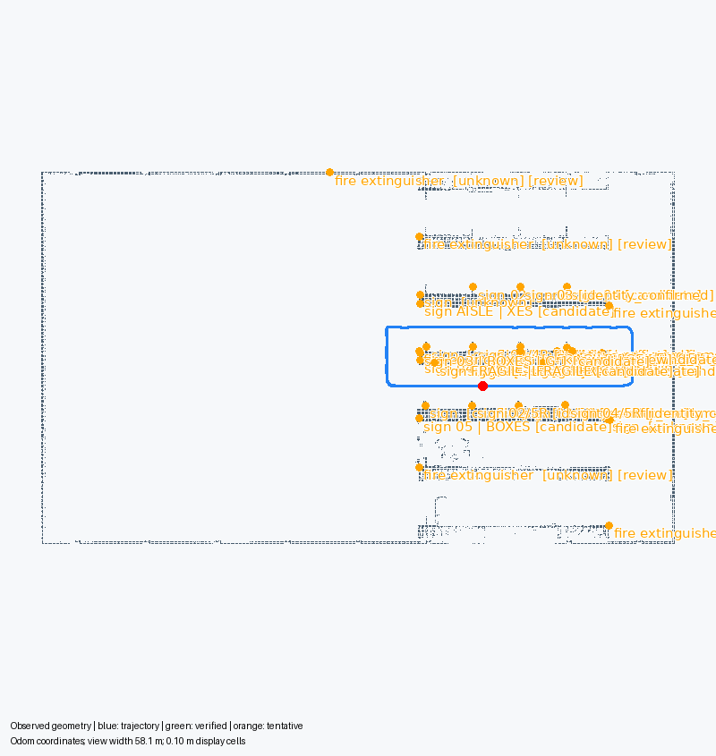
{
"request_id": "continuous-target-1",
"task_id": "target",
"instruction": "Navigate to sign 04/5R in the farther second aisle and STOP beside it.",
"initial_route": "Turn around, cross the near-end cross-aisle, turn left into the second aisle, follow it to sign 04/5R, approach the sign and STOP beside it.",
"previous_route_policy": "Retain every unfinished step in order, including final STOP.",
"landmark": [
"sign"
],
"local": "In the second aisle, approaching the mapped position of sign 04/5R.",
"route": "Continue along the second aisle to sign 04/5R, approach it and STOP beside it.",
"waypoint": [
[
3.105549538802018,
-0.0007366224739095983
],
[
4.60554945486647,
-0.0012383763027052908
],
[
5.305716666973797,
0.4985274439374896
],
[
5.705616293824635,
0.1983936597002982
],
[
6.105449090530126,
-0.3015297545627611
]
],
"planning_started_monotonic": 8035.966258617,
"target_uid": "dcd8ceacda4e43be8ae1e14c37d312c0",
"source_image_id": "codex-continuous-20261112-v2:00001196",
"provider": "codex-reviewed-decision-replay",
"accepted": true,
"wall": 1794472430.8584774
}continuous-finish — accepted=True
输入与来源 · 原文

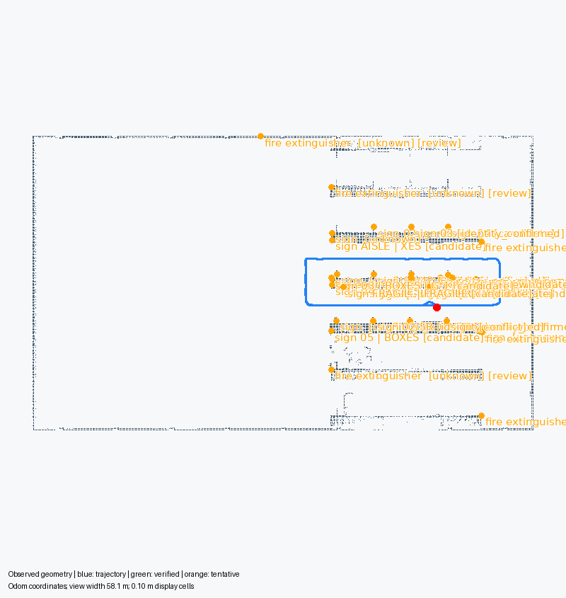
{
"request_id": "continuous-finish",
"task_id": "target",
"action": "finish",
"instruction": "Navigate to sign 04/5R in the farther second aisle and STOP beside it.",
"landmark": [],
"local": "Stopped beside mapped sign 04/5R.",
"route": "STOP",
"source_image_id": "codex-continuous-20261112-v2:00001309",
"provider": "codex-reviewed-decision-replay",
"accepted": true,
"wall": 1794472453.0086358
}